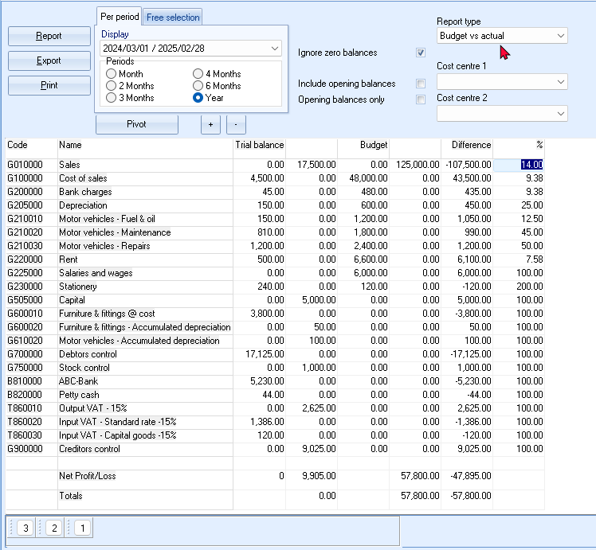
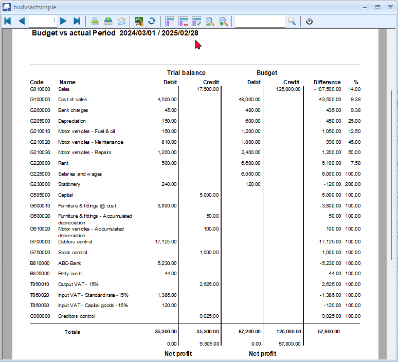
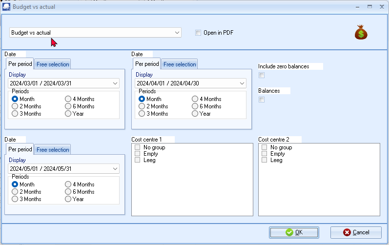
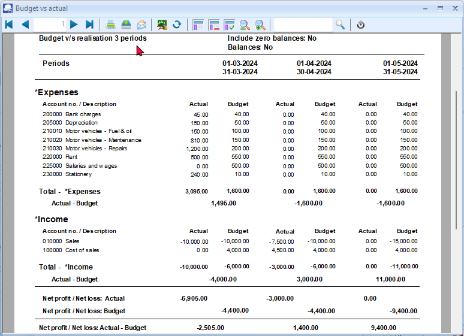

Budget performance reports
Budget performance reports
Printing the Budget vs actual report
This report will display the following:
- Trial balance - The actual figures on the Trial balance - totals of transactions as posted (updated to the ledger) in batches (journals), sales documents (i.e. Invoices, Point-of-Sale Invoices and Credit notes) and purchase documents (i.e. Purchases and Supplier returns).
- Budget - Once any budget figures are entered or edited (and saved), these figures will automatically be updated to the applicable accounts and will be available in the Ledger analyser and any reports which supports budget figures.
- Difference - The difference amount actual trial Trial balance vs the Budget figures.
- Percentage - The difference expressed as a percentage.
To print a budget vs actual report:
- On the Reports ribbon, select Ledger analyser 1 or 2.
- Select the “Budget vs actual” report type. This option is available for the Income / Expenses, Trial balance and Balance sheet report type.

- To view the annual budget figures; select “Year” and the period from 2024/03/01 to 2025/02/28.
|
|
Select the period from 2024/03/01 to 2024/03/31 to view the budget figures for a specific period, e.g. “March 2024”. |

- Click on the Report button to refresh and generate the budget figures.
- If any of these budget figures need some adjustment, click on the Setup → Accounts (Setup ribbon); select the applicable accounts and edit or enter the necessary figures.
- Click on the Print button. The “budgetvssimple.rep” parameters screen will be displayed.
- Click OK.
An example of the printed “Budget vs actual” report, is as follows:

Printing the Budget vs actual (3 Periods) report
The Budget vs Actual (realisation - 3 periods) report lists the Income and Expense account balances and budget figures for three (3) periods as comparative figures.
Only the transactions in documents and batches which are posted (updated) to the ledger will be included in this report.
Budget figures are entered and edited in the Setup → Accounts (Setup ribbon).
If you have activated Cost centres and have entered the budget figures for Cost centres, you may select (tick) the Cost centres to print this report for your Cost centres.
To print a Budget vs actual (3 periods) report:
- On the Reports ribbon, select Reports → Ledger → Budget.

- Select the following options:
- Period - Select up to three (3) periods on the Per period tabs. You may click on the Free selection tab to select a specific date or a range of dates to include balances and budget figures in the report.
- Include zero balances - If this option is not selected (not ticked), it will list only the expense and income accounts which has balances and / or budget figures. Tick this option to include all accounts including those with no actual transactions and / or budget figures).
- Balances - If this option is not selected (not ticked), it will list the expense and income accounts which has balances and / or budget figures. If you tick this option to show only the actual transactions totals and / or budget totals of expense and income accounts for the selected period or dates.
- Cost centre 1 - Will be listed if you have activated Cost centres and created Cost centre 1 (Groups (Setup ribbon)). You may select any of these Cost centres, to include in the report.
- Cost centre 2 - Will be listed if you have activated Cost centres and created Cost centre 2 (Groups (Setup ribbon)). You may select any of these Cost centres, to include in the report.
- Click on the OK button.
The “Budget vs actual (realisation - 3 periods)” report, should be displayed as follows:

The details, is as follows:
- Header section - Report name and Periods as selected on the Periods in the “Report options / parameters” screen.
- Expenses - A list of the accounts (created as Income and Expense account type and linked to the Expenses group / financial category). If the “Include zero balances” field is selected (ticked), all expense accounts will be listed (including those accounts with no actual transactions and or budget figures. If the “Balances” field is selected (ticked), only the “Total - *Expenses” will be displayed.
- Income - A list of the accounts (created as Income and Expense account type and linked to the Income group / financial category). If the “Include zero balances” field is selected (ticked), all income accounts will be listed (including those accounts with no actual transactions and or budget figures). If the “Balances” field is selected (ticked), only the “Total - *Income” will be displayed.
- Totals -
- Net Profit / Net Loss: Actual - This is the total of the Expenses less the Income totals for posted batches and documents. A negative figure indicates a Net Profit and a positive figure displays a Net Loss for the selected periods (dates).
- Net Profit / Net Loss: Budget - This is the total of the Expenses less the Income totals for the budget figures as entered / edited (Setup → Accounts (Setup ribbon)). A negative figure indicates a Net Profit and a positive figure displays a Net Loss for the selected periods (dates).
- Net Profit / Net Loss: Actual - Budget - This is the total of the Net Profit / Net Loss: Actual less the Net Profit / Net Loss: Budget totals. A negative figure indicates that the posted batches and documents exceeds (overspend) the budget figures for the selected periods (dates). A positive figure indicates that the posted batches and documents is less than the budget figures (available) for the selected periods (dates).